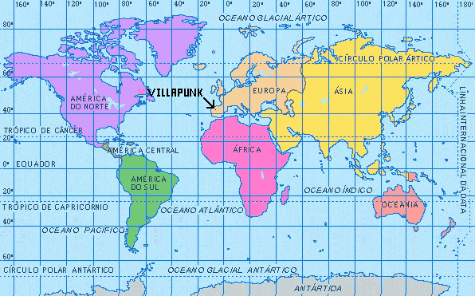
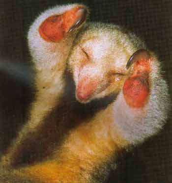
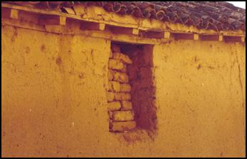

Villapún
 De: La Frikipedia, la enciclopedia extremadamente seria.
De: La Frikipedia, la enciclopedia extremadamente seria.
Villapún o Villapunk (para los mas radikales del pueblo). Es el unico lugar en el que siguen aviendo revueltas contra Franco, la ausencia de caminos y señal de radio y televisión y el echo de que los habitantes no sepan lo que es puede tener algo que ver.
Datos de interés
 Localización de Villapunk
Es el pueblo con mas bares por habitante ya que hay un bar para 4 cosa que una vez llego a ser portada del informativo de la COPE. La peña de ese pueblo se aburre mas que una puta en cuaresma ya que el bar cierra a las 6 de la tarde, pero justo a esa hora se habré el puticlub pero los 2 viejos del pueblo no tiunen dinero para ir porque al ser su mujer la que trabaja allí no ganan na ya que lo únicos que pueden ir son ellos.
Población
Como ya se a leído antes la población es de lo más variada:
El abuelo, la abuela, el hijo y la hija, y alguna oveja que otra.
Personas ilustres del pueblo
La mayoría de la peña a ido abandonando el pueblo para desarrollar su vida lejos de los malos ambientes, ya que el Sr. MOKO cuando va se tira 1 pedo por metro cuadrado. Aquí les dejo unos de los mas ilustres:
- Josemeriaazna: Político de ultra izquierda derechista, independentista de Villapunky creador de la Kale Borroka que quema las plantas de la abuela del MOKO.
- Mariantete Rajoy: Amigo intimo de Josema (así le llaman sus amigos)es conocido por su conocido verbo y su lengua (de trapo) ahora esta trabajando cerca del PP para ser mas exactos en frente en el contenedor de esa calle.
- El Penumbras: No tiene nombre, se le conoce así porque tiene menos luces que un Duper de Obra, estaba toda la vida en el bar pero ahora a dejado de ir.
- George Autobush: Actual presidente de EEUU, tiene miles de fans pero hay uno que siempre va gritando "EL AUTOBÚS, EL AUTOBÚS".
- El Sevilla: Famoso bailaor de claké cuyo atuendo favorito es su tutú rosa pegado a un peaxo bañador atigrado supermegasessi. Es un Lechuga Mustia. Esta técnica la aprendió en un restaurante hiperpijo de Bruselas en el que se servía sospechosa sopa de espaguetti con albóndigas. Al encontrarse esta gran blasfemia quiso ver al cocinero (alias Musti) para pegarle una somanta de ostias pero se enamoró de el y se quedo a vivir allí donde aprendió a ser un Ninja para luchar contra Chuk Norris.
- El MOKO: Ilustrisimo personajillo de extremadura que nació concretamente en el bar Xikis. Sus padres que eran muy descuidados le enviaron a Villapun pensando que era una botella de Orujo y así es como llego a este pueblo tan entrañable.Va por allí cada 2 o 3 findes pero esta 10 minutos en lo que da el palo a su "abuela" y a todos los viejetes que hay en los pueblos de los alrededores.Aunque nunca lo consigue ya que llega Chuck Norris y las pega el palo antes.
Fauna y flora
- Chipirón Pirenaico de Interior: Animal natural de Villapún, todas las demas especies de chipirón pirenaico (marinas o terrestres) provienen de este especímen. Su estrategia para atrapar presas es poner cara de osito de mimosín, sus víctimas no esperan que algo tan adorable les pueda atacar, una vez enbauca a su comida se lanza al cuello como el conejo de Los Caballeros de la Mesa Cuadrada, su alimentación es de lo más variada, puede comer desde buitres al ajillo hasta ballenas rellenas de guindillas.
- Planta Parlante: Fue el especimen en el que se inspiró Tolkien para hacer los ents en El Señor de los Anillos. Tienen el aspecto de una coliflor cocida pero hablan por las ramas, les encanta el fútbol, todas son del Betis y les encanta decir: viva'l Betis aunque pierda. Son unas plantas extremadamente salidas y no le hacen ascos a nada, meten mano a lo primero que les pase por delante, como si es una tía, un tío, una vaca, un tractor, un extraterrestre (que abundan mucho en Villapún)...
- Serafín del platanar:
 Así se rumorea que es el mítico animal
Historia de Villapunk
Alla cuando imperio Chuckmano consiguio derotar al otro imperio, el de pdp, partido de pajas ya que este pueblo es el que mayor numero de pajas tiene por habitante: 6 diarias. Un episodio de olvidar en la historia de este pueblo fue el de la epoca de la infancia del MOKO ya que cuando plantaba un truño morian 100 hectarias de campo asi que el pueblo cada 2 o 3 dias se iba trasladando de lugar, por eso ahora existe el desierto del sahara.
Comercio
Gran ejemplo de la que lio el moko tras beberse su meao
Musika en Villapún
En el panorama musical Villapun esta a la vanguarda con su grupo de octogenarias que bailan reggaeton de una forma tan peculiar como mean los insectos, es decir nadie sabe como bailan y menos como mean. En la vertirnte mas radikal del pueblo se situa la Banda de Punk llamada: octogenarios revolucionarios que tocan como los angeles pero sin lira no arpa ni 4 pollas de esas, sino que tocan con unas guitarras españolas con 4 pegatas anti-sistema y con los cojones para decir lo que piensan, es decir nada porque su demencia senil no les deja ni recordar las letras. Y en la parte menos pero menos radikal del pueblo esta el grupo de pop: Octogenarias gils, que salen en la emisora local del pueblo, que es del mismo grupo de Radio Olé.
Casas en Villapun
 Típica casa de Villpunk
Son pequeñas y desastrosas ya que viven drogados en ellas.En ellas hacen fiestas todos los dias que se aburren.Cada dia en una casa ya que no hay muchas.Algunas personas no van todos los dias pero el MOKO no se pierde ni una porque el va ha ver a las putas ya que una es su mujer porque andan escasos de personal.Como en el pueblo son cuatro personas mal contadas las otras tres son viejos y no ven bien.Cuando vulven a casa resulta que se han tirado al un pedazo de hombre que alucinas.
Autor(es):
- Khazike Khashondo
- Azulejos
- El Sevillano
- Dolores fuertes de barriga
- Gibson
- 126dsh
- Larep
- Barcearanda
Frikipedia 2005-2016, Licencia
GFDL 1.2 - Extraído por FrikiLeaks